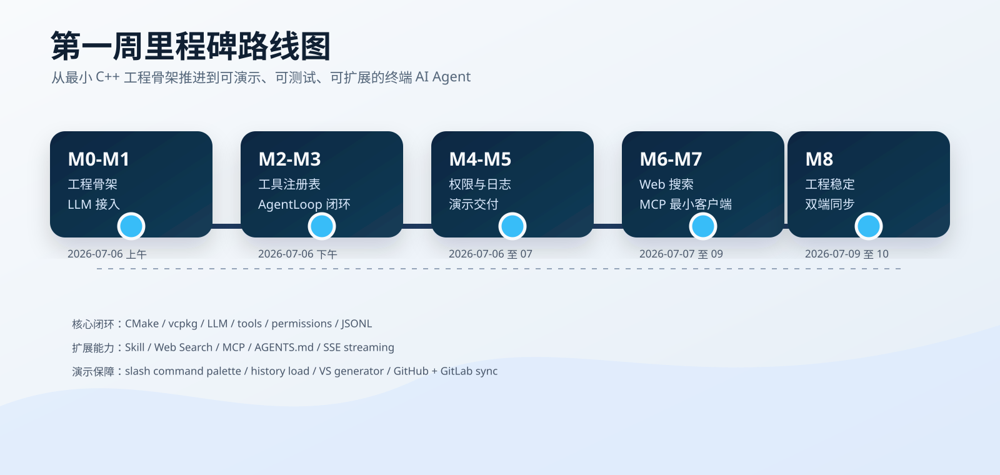
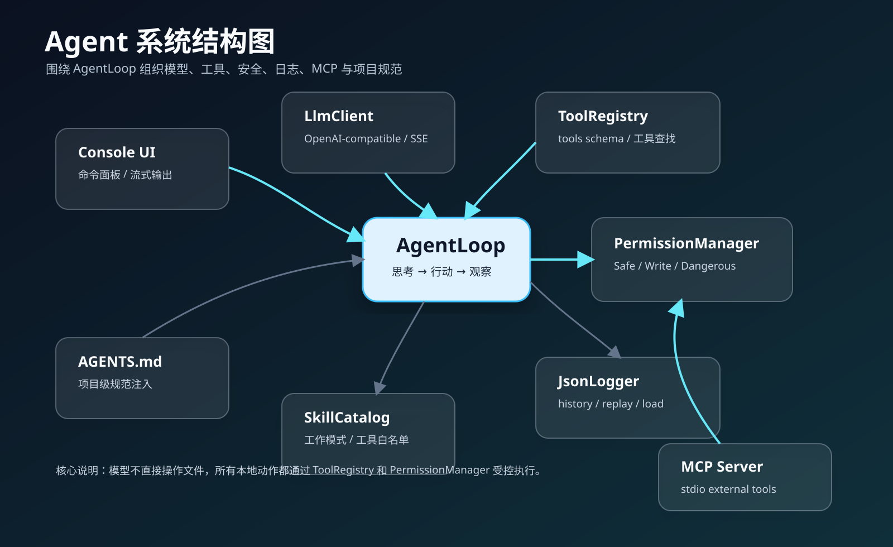
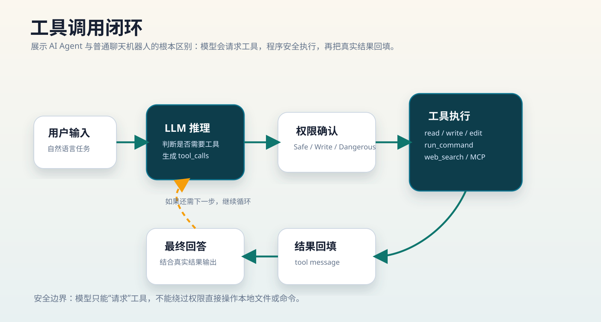
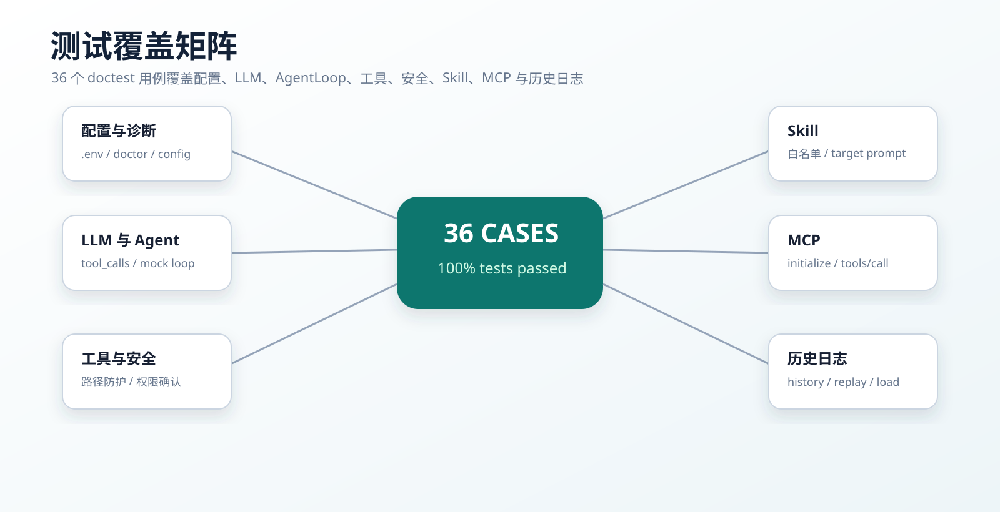
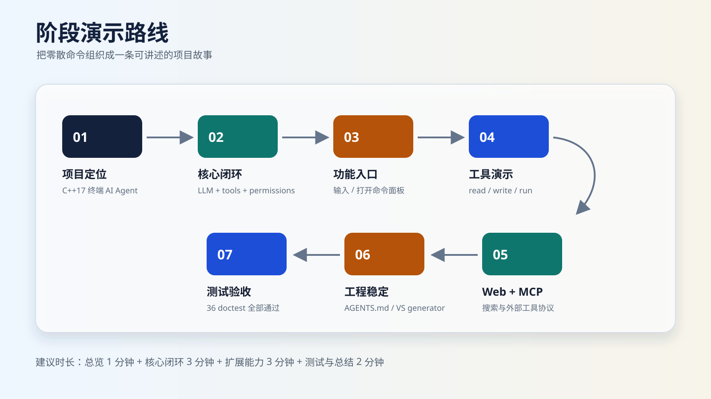

一、本周进展总览
项目已经不只是基础聊天程序，而是形成了“用户输入 → 模型决策 → 工具调用 → 权限确认 → 结果回填 → 日志追踪”的 Agent 闭环。

核心闭环
M0-M5 完成 CMake 工程、LLM 接入、工具系统、AgentLoop、安全日志和演示入口。
扩展能力
M6-M7 完成 Web 搜索、Skill 模式和 MCP stdio 最小客户端。
工程稳定
M8 解决新电脑构建、中文参数、AGENTS.md 注入和双端同步问题。
二、系统架构
AgentLoop 是系统中枢，连接模型、工具、安全、日志、Skill、MCP 和项目规范。

三、核心能力闭环
模型不直接操作本地系统，而是通过 tool_calls 请求工具，程序再受控执行。

项目重点不是“模型会回答”，而是“模型能够在权限控制下调用本地工具，并把真实结果继续用于推理”。
四、测试与验收
本周多次执行构建和测试，当前测试报告显示 36 个 doctest 用例全部通过。

| 验收项 | 命令或输入 | 演示价值 |
|---|---|---|
| 配置诊断 | ai-agent.exe /doctor | 检查 API、模型、workspace 和 vcpkg |
| 命令面板 | 主对话输入 / | 集中查看所有功能入口 |
| 工具调用 | 读取 README 并总结 | 验证 read_file 与结果回填 |
| Web 搜索 | /search "MCP 是什么" | 验证中文参数和外部知识接入 |
| MCP | /mcp-demo | 验证 stdio 握手和工具发现 |
| 历史恢复 | /load | 验证会话续接和日志可追溯 |
五、阶段演示路线
从项目目标、核心闭环、扩展能力到工程稳定性，完整呈现第一周阶段成果。

六、团队协作与下周计划
樊浩总体集成、GitHub/GitLab 同步、演示入口和文档覆盖。
王博轩LLM 接入、AgentLoop 主循环、tool_calls 解析和上下文管理。
康艺凡工具系统、安全确认、路径越界防护、diff preview 和日志回放。
魏宇鑫Console UI、Skill、MCP 最小客户端、Web 搜索和扩展能力整理。